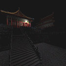
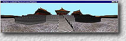
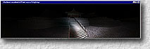

 panoshader demo version 1.0
Program code contributors:
Siu-Hang Or
Chi-Wing Fu
Tien-Tsin WongIntroduction
- This program demonstrates the ability to perform real-time dynamic lighting on highly compressed panoramic images. This kind of relightable (illumination-adjustable) panorama is especially useful for representing large-scale complex backgrounds in computer games. The real-time relighting is implemented by writing shaders on programmable graphics hardware.
- An image-based scene, "forbid" (less than 3MB in size), comes with this demo. There are two programs, one for directional-source relighting and the other for point-source relighting. In both cases, the same data set "forbid" is loaded. To demonstrate the real-time performance, the light sources change in color, direction or position during the run-time.
System Requirement
- Hardware: Pentium III or above, 128MB RAM, installed with nVidia GeForce3/4/FX graphics accelerator.
- OS: Windows 98/NT/2000/XP, with OpenGL
User Manual
 Directional-source relighting:
Start "dir.exe" to run the demo. Once the program is started, a directional light source moves around and illuminates the scene forever. It changes its color from time to time.
Drag inside the window to accelerate the change of illumination.
Press "a" or "A" to pause/resume the change of illumination.
Press "q" or "Q" or escape to quit the demo.
 Point-source relighting:
Start "pt.exe" to run the demo. Once the program is started, a point light source moves around in the scene and illuminates the scene with changing color and intensity. It follows the animation script defined in "animation.txt". Inappropriate modification to this script file may cause program fault.
Press "a" or "A" to pause/resume the change of illumination.
Press "q" or "Q" or escape to quit the demo.
Press "t" or "T" to toggle the display of the attenuation map.
Related Publication
- " Real-Time Relighting of Compressed Panoramas",
Tien-Tsin Wong, Siu-Hang Or and Chi-Wing Fu
Graphics Programming Methods, Edited by Jeff Lander, Charles Rivers Media, 2003.
- "Image-based Rendering with Controllable Illumination",
Tien-Tsin Wong, Pheng-Ann Heng, Siu-Hang Or and Wai-Yin Ng,
in Proceedings of the 8-th Eurographics Workshop on Rendering, St. Etienne, France, June 1997, pp 13-22.Contact Person